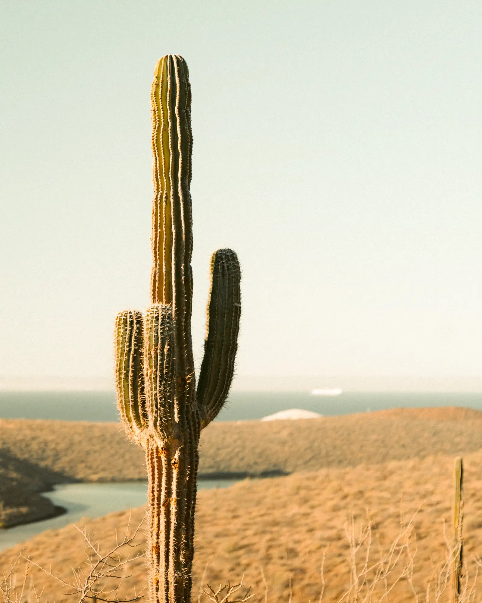

La pesca de la mañana llega a la playa entre las 10 y las 12. Las mesas de esta lista compran directo a los pescadores de la bahía, así que el pescado que comes a la hora de la comida salió del agua unas horas antes.
En el centro
Si estás caminando por el malecón, estas dos quedan a media cuadra. Las dos abren a mediodía y se llenan a las dos.

Mariscos La Bahía
Pesca del día a la talla, en mesas de plástico a media cuadra del malecón.
Pide el pescado «zarandeado» si lo tienen: lo abren a la mitad y lo asan con chile y mayonesa. Para dos personas alcanza uno de un kilo.
En el mercado
Para desayunar o comer rápido y barato, las fondas del Mercado Madero sirven machaca de pescado y tostadas desde las 7.

Mercado Madero
Fondas de desayuno, queso de rancho y machaca de pescado.
Si vienes en noviembre
El primer viernes del mes hay cena de pesca del día con música en el malecón:
Vie6Música y fiestasTrova al atardecer en el malecón
Pesca tu propia comida
Varias de estas mesas te cocinan lo que pescas. Si quieres salir en panga por la mañana:
Tours en La Paz


Preguntas frecuentes
¿A qué hora conviene ir?
Entre la 1 y las 3 de la tarde, cuando acaba de llegar la pesca de la mañana.
¿Aceptan tarjeta?
Casi todas sí; en los puestos del mercado lleva efectivo.
¿Hay opciones sin mariscos?
Todas tienen pollo o quesadillas, y el mercado tiene fondas de comida casera.